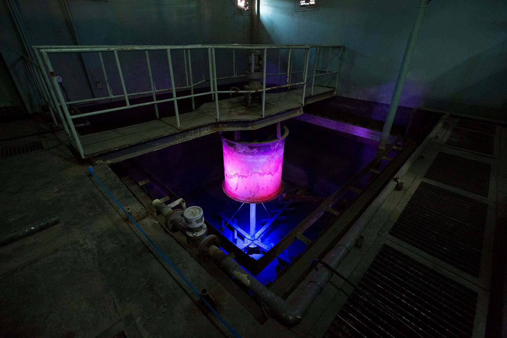
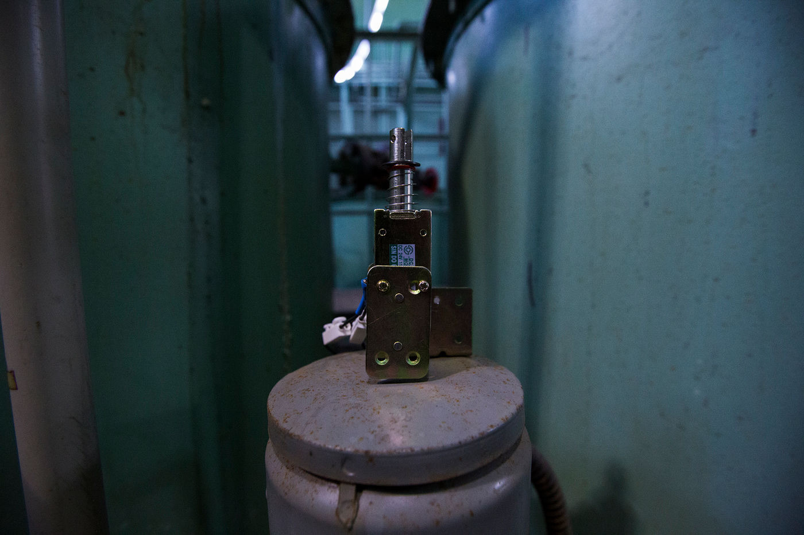
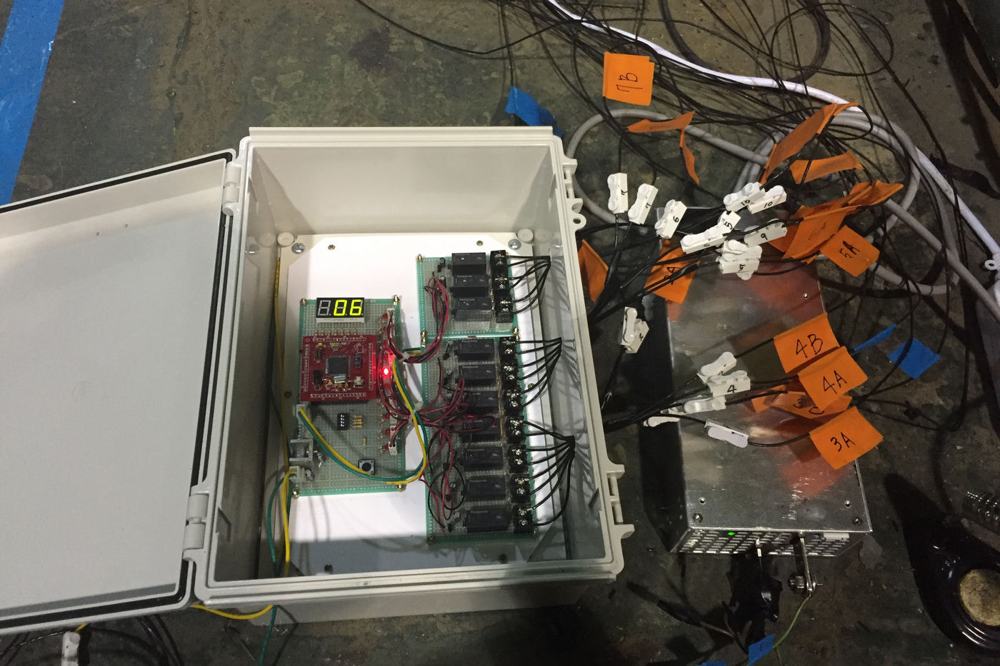
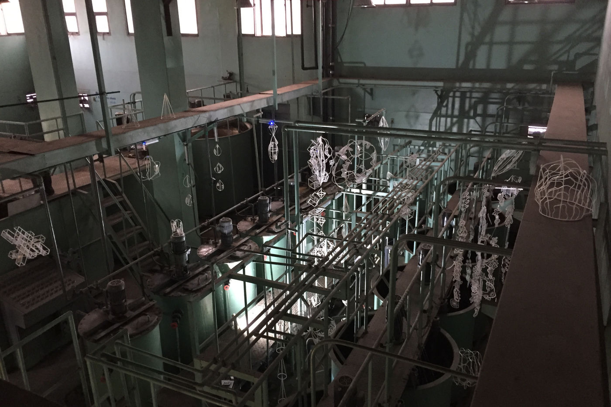

Installation — 2015
Catharsis
정화 기능을 수행하던 옛 하수처리장을, 빛과 소리로 마음을 정화하는 공간으로 되살리는 사이트-스페시픽 설치.
A site-specific installation that recreates a former sewage treatment plant — once a place of purification — into a space that now purifies the mind.
이 사이트-스페시픽 전시는 ‘기계 구조에 응답하는 예술적 실험’을 주제로 합니다. 한때 정화 기능을 수행했던 옛 하수처리장을, 빛과 소리를 사용해 이제는 마음을 정화하는 공간으로 되살립니다. 전시 작업은 피지컬 컴퓨팅의 솔레노이드 장치와 LED 조명 사이의 상호작용을 활용합니다.
This site-specific exhibition focuses on the theme of ‘artistic experiments responding to mechanical structures.’ Using light and sound, it recreates a former sewage treatment plant — which once performed purification functions — into a space that now purifies the mind. The piece utilizes the interaction between solenoid devices from physical computing and LED lighting.
- 매체
- Medium
- mixed media, LED light, solenoid
Seoul Innovation Center, Seoul — 2015


